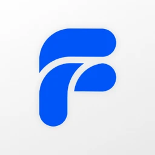

01
Compte rendu de visio client
Yogurt repère l'appel Teams, Zoom ou Meet, propose d'enregistrer et écrit le résumé à la fin.
Appel repéré→Transcription→Résumé

Des comptes rendus de réunion par IA, sans robot dans l'appel, gratuits et 100 % sur ton ordinateur.

Yogurt est une appli de bureau qui enregistre ton micro et le son de ton ordinateur pendant une visio : aucun robot ne rejoint l'appel. Elle transcrit la réunion, mélange la transcription avec les notes que tu tapes, puis écrit un résumé et répond à tes questions. Les modèles d'IA tournent sur ta machine : après leur téléchargement, tout marche hors ligne. Le projet est sorti en novembre 2026 : c'est encore une version 0.3.
macOS 14.4 ou plus récent, 8 Go de mémoire au minimum (16 Go ou plus pour un meilleur modèle de notes). C'est la version la plus complète : agenda et noms des intervenants seulement sur Mac.
RecommandéWindows 10 (version 2004) ou plus récent, 64 bits, 8 Go de mémoire. L'installeur n'est pas encore signé : Windows peut afficher un avertissement au premier lancement.
PossibleUbuntu 22.04 ou équivalent, 64 bits, en AppImage. Il faut PulseAudio ou PipeWire, parfois FUSE 2, et l'extension AppIndicator sous GNOME pour l'icône.
Pour les avancésYogurt repère l'appel Teams, Zoom ou Meet, propose d'enregistrer et écrit le résumé à la fin.
Le résumé liste les prochaines étapes par personne, et tes propres rappels à part.
Demande « on lance quand ? » : la réponse cite la réunion d'où elle vient, dans une réunion, un dossier ou toutes.
Importe un MP3, M4A ou WAV (entretien, cours, mémo vocal) et récupère transcription et notes.
Dossiers, recherche dans les titres, notes et transcriptions, et sauvegarde complète en un fichier ZIP.
Une appli soignée, très active et vraiment locale, mais sortie il y a deux semaines : teste-la sur des réunions courantes avant de lui confier tes plus importantes.
Nouvelles versions presque chaque jour (v0.3.69 le 23 novembre 2026), dernière mise à jour le jour même.
Plus de 3 000 étoiles et 267 copies (forks) en moins de deux semaines, lancement remarqué sur Hacker News ; communauté encore toute neuve.
Tout est traité sur ton ordinateur, pas de serveur qui reçoit les enregistrements, pas de télémétrie, code ouvert et vérifiable.
Gratuit et MIT, fait par Frigade, une start-up soutenue par Y Combinator ; pas de formule payante annoncée, donc avenir à surveiller.
Version 0.3, installeur Windows non signé, agenda et noms des intervenants seulement sur Mac.
Comment on note : 5 critères notés sur 5, vérifiés sur GitHub et dans la documentation officielle le 23 novembre 2026. La note sur 10 est la moyenne ramenée sur 10.
Bon pour : Des comptes rendus privés, sans robot ni abonnement
Bon pour : Le plus abouti, sans robot, pour les équipes
Bon pour : Transcription en direct, avec un robot dans l'appel
Bon pour : Les équipes commerciales, avec un robot dans l'appel
Code source, installation et documentation officielle : tout est là.

Chaque vidéo RepoPop t'explique un dépôt GitHub utile en moins d'une minute, avec son kit comme celui-ci.